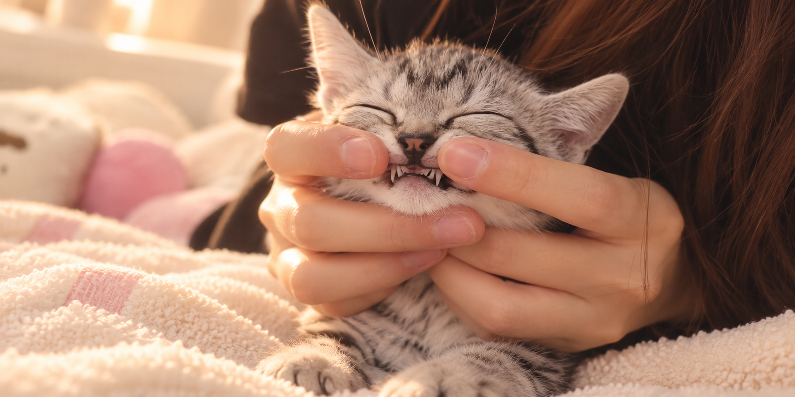

Every tail has a story. This one belongs to Pidou.
A simple guide to helping your cat live a happy, healthy, and safe life.
Cat Care
Healthy Life
Learn about basic cat care, including food, exercise, and regular vet visits.
Safety & Protection
Learn how neutering, vaccines, and pet insurance can help protect your cat.
Love & Responsibility
Having a pet is a long-term responsibility. Give them time, attention, and a safe home.

Meet Pidou
Pidou is the inspiration behind TailStory. Through his story, this website shares simple ideas about caring for cats and becoming a responsible pet parent.
Preparing for a Cat
- Food and water bowls
- Litter box
- Cat carrier
- Toys and scratching post
Before bringing a cat home, prepare food, litter, toys, a carrier, and a safe place for them to rest.
Health & Vet Care
- Regular vet visits
- Vaccinations
- Neutering
- Pet insurance
Regular checkups and preventive care help keep your cat healthy and prepare you for unexpected medical costs.